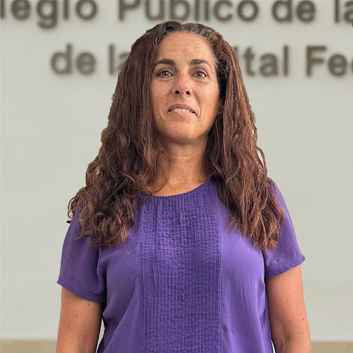
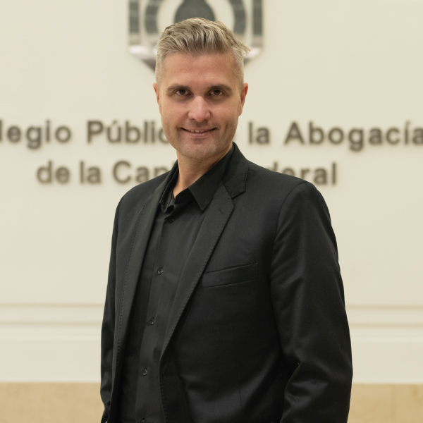
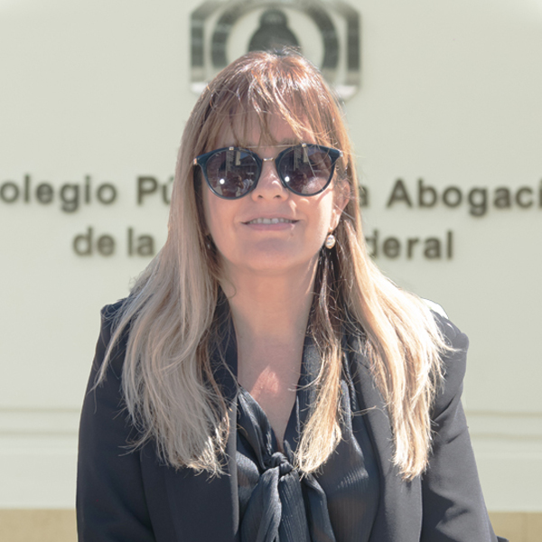

El Espacio
Espacio Abierto de la Abogacía
Somos un espacio integrado por profesionales provenientes de diversos sectores, con ideas muy claras y un único compromiso: poner el Colegio al servicio de cada profesional.
Somos el ÚNICO ESPACIO PLURAL E INDEPENDIENTE, que representa tus intereses, y no en los de la política partidaria.
Llegó el momento de transformar la Colegiatura, sumate a ser parte del cambio.
Trabajo En Equipo
Somos la única alternativa plural e independiente de los partidos políticos conformada por abogadas y abogados que trabajan en el ámbito público y privado.
Ideas y propuestas
6 propuestas fundamentales de gestión. Vamos a hacer que el Colegio de un giro de 180 grados, poniéndolo de cara a la abogacía y de espalda a los partidos políticos.
Soluciones
Queremos un colegio que cumpla con sus finalidades y que no derroche lo recaudado por matrícula, bonos y cuota de inscripción. Queremos un Colegio Público Digital que defienda, beneficie y acompañe a las y los trabajadores del Derecho.
Hoja de ruta
Plan de modernización del Colegio Público de la Abogacía 2026-2028
Somos los únicos que proponemos el Colegio Público Digital (CPD) para que le sirva, acompañe y defienda a la abogacía.
Continuemos avanzando
POR UN COLEGIO QUE SIRVA A LA ABOGACÍA
SOMOS EL ÚNICO ESPACIO CON PROPUESTAS IDEADAS EN BENEFICIO DEL PROFESIONAL INDEPENDIENTE. PENSADAS PARA TRANSFORMAR EL COLEGIO EN UN LUGAR QUE LE SIRVA A LA ABOGACÍA, Y NO AL REVÉS.
VOTO DIGITAL
Sí podemos litigar en forma remota, sí podemos operar con el banco desde el celular, sí podemos hacer compras desde la computadora. También vamos a poder votar en forma digital como lo hace el Colegio Público de Abogados de San Pablo Brasil. Es práctico, votas sin perder tiempo. Inclusivo, toda la abogacía puede votar y democrático, más participación es mayor legitimidad.
FONDO PARA EL DESARROLLO PROFESIONAL
Líneas de crédito para la compra de tecnología, capacitaciones y apertura de estudios jurídicos.
Así como existen herramientas financieras para impulsar a las pequeñas empresas, también el Colegio puede acompañar el crecimiento profesional de la abogacía.
Con financiamiento accesible para equipamiento, formación y desarrollo de estudios jurídicos, buscamos que cada matriculado pueda invertir en su futuro profesional y ampliar sus oportunidades de trabajo.
KIT DIGITAL PARA LA ABOGACÍA NOBEL
Cuenta de almacenamiento en la nube, acceso a doctrina y jurisprudencia on line, herramientas de gestión; todo en forma gratuita para que puedas comenzar a ejercer.
Comenzar a ejercer no debería implicar enfrentar altos costos iniciales.
Por eso proponemos un kit digital que garantice el acceso para la abogacía novel, con herramientas tecnológicas esenciales para el trabajo cotidiano. Acceso a información jurídica, almacenamiento en la nube y recursos de gestión para que el inicio profesional sea más simple, moderno y accesible.
PLATAFORMA DIGITAL COMERCIAL
Esta plataforma conectará a la abogacía con todos los servicios que son necesarios hoy para poder ejercer, como ser: software legal, marketing jurídico, servicios contables, traducciones públicas, pericias, servicios tecnológicos, entre otros.
BIBLIOTECA JURÍDICA DIGITAL SIN CARGO
Acceso a doctrina, jurisprudencia, revistas jurídicas, bases legislativas y herramientas de investigación jurídicas en forma digital y sin cargo para toda la abogacía con disponibilidad 24 hs. x 7 días x 365 todo el año.
INCUBADORA DE ESTUDIOS JURÍDICOS
Programa de incubación de nuevos estudios jurídicos a partir de mentorías de abogados con mayor experiencia, capacitación en el negocio jurídico y marketing profesional, gestión de estudio jurídico, desarrollo de especialidades y networking.
POR UN COLEGIO QUE ACOMPAÑE A CADA PROFESIONAL
IGUALANDO OPORTUNIDADES, ACOMPAÑANDO A CADA PROFESIONAL EN SUS PROYECTOS Y EN SU FORMACIÓN.
SEGUROS
La elevada matrícula (+88.000 profesionales), permite que el Colegio Público acuerde bajos aranceles de seguros para accidentes personales y cauciones de cobertura por plus petitio inexcusable.
Una matrícula numerosa también puede transformarse en un beneficio concreto para toda la abogacía.
Negociando en conjunto, el Colegio puede obtener mejores condiciones y menores costos en seguros profesionales y personales. De esta manera se brinda mayor protección a quienes ejercen la profesión y se reducen gastos que hoy cada profesional debe afrontar individualmente.
RÉGIMEN DE LICENCIA PARA LA ABOGACÍA
Al igual que existen en otras jurisdicciones del país, vamos a impulsar las reformas legales o reglamentarias necesarias para establecer un régimen de licencias especiales ante diversas contingencias de la vida profesional en materia de maternidades, adopción, matrimonio, enfermedades, accidentes, vacaciones, etc. dado que, como profesionales de la abogacía, también somos personas trabajadoras.
Creemos necesaria la implementación de un sistema de cuidados que contemple la actividad profesional como parte de las personas que precisan, otorgan y reciben cuidados por medio de recursos, infraestructura y tiempos.
PROTOCOLO CONTRA LA VIOLENCIA
Vamos a propiciar la aprobación de un protocolo de actuación para el tratamiento de situaciones de discriminación, acoso o violencia por razones de género, raza, religión, discapacidad, edad, condición socioeconómica, opinión gremial o política, incluyendo la violencia o discriminación por razones de género en el ejercicio profesional para mujeres, diversidades y disidencias, que permita al Colegio Público, actuar en forma rápida, y efectiva en la asistencia de este tipo de casos.
PAGO DE LA MATRÍCULA DE FORMA MENSUAL
Todos los profesionales podrán abonar la matrícula en 10 cuotas mensuales con TARJETAS DE CUALQUIER BANCO. (quedan exceptuados del pago los meses de enero y julio). Hoy más del 69% de la abogacía tiene dificultades económicas, y una forma de ayudarlos es mitigar los gastos que el Colegio Público les genera. Por eso terminamos con el pago de la matrícula en una sola cuota. También vamos a revisar la actualización automática del monto de la matrícula. Además todos los profesionales que pagaron la matrícula en tiempo y forma en los últimos años recibirán una bonificación por cumplimiento en el pago de la próxima matricula.
ELIMINACIÓN TOTAL DE LA CUOTA DE INSCRIPCIÓN
Cada abogado que recién comienza su camino profesional necesita el apoyo del Colegio Público para poder ejercer la profesión, además de capacitarlos, vamos a eliminar el pago obligatorio de 2 matrículas para obtener la credencial. Además, vamos a extender la bonificación de la matrícula a 4 años y durante los 2 siguientes solo abonarán el 50% de su valor. Esta propuesta contempla a todos aquellos profesionales que se matricularon a partir del año 2020.
BONIFICACIÓN DE LA MATRICULA SI APORTASTE DURANTE 30 AÑOS
Actualmente se requiere haber cumplido 70 años de edad para ser considerado abogado honorario y haber estado matriculado 25 años, es decir, que un abogado que se matricula a los 30 años debe pagar 40 matrículas para obtener el beneficio. Vamos a proponer que se bonifique el pago de la matricula profesional a las abogadas y abogados que hayan pagado durante 30 años la matrícula, sin considerar la edad del profesional.
CRÉDITOS A TASA 0%
Los problemas económicos son importantes para una gran mayoría de profesionales y el Colegio Público tiene reservas en dólares que puede disponer para ayudar a los matriculados con préstamos para comprar equipamiento para su primer estudio o renovar la tecnología para poder ejercer.
LÍNEA DE FINANCIACIÓN DE MATRÍCULAS ADEUDADAS
Creación de un fondo de financiación de matrículas adeudadas para las y los profesionales que por la situación económica no puedan abonar en tiempo y forma puedan volver a ejercer la profesión.
FONDO DE AYUDA PARA EL COBRO DE HONORARIOS
Vamos a impulsar un fondo que ayude y acompañe a toda la abogacía en el cobro de los honorarios. Las injustas regulaciones contrarias a la ley de honorarios y la demora en la apelación y su posterior cobro requieren de un Colegio Público que cuide de sus matriculados. Adelanto de honorarios regulados y un fondo compensador de intereses devengados por la demora en el libramiento de giros judiciales son posibles con los recursos del Colegio Público.
POR UN COLEGIO QUE DEFIENDA LA MATRÍCULA
POR UN COLEGIO PÚBLICO DENUNCIANTE Y LITIGANTE ANTE CUALQUIER HECHO QUE ATENTE CONTRA EL PROFESIONAL MATRICULADO.
PORTAL CONTRA LAS ARBITRARIEDADES DE LOS ORGANISMOS PÚBLICOS
El art. 5 de la ley 23.187 establece que los abogados en el ejercicio profesional son equiparados a los magistrados y se les debe la mayor consideración y respeto de parte de los funcionarios de los organismos públicos. El Colegio va a actuar judicial o administrativamente ante cualquier organismo público que no cumpla con lo establecido en la ley.
DEFENSA DE LAS INCUMBENCIAS PROFESIONALES
La abogacía permanentemente recibe ataques de diferentes sectores profesionales que intentan quitarnos incumbencias y así limitar nuestro campo laboral, además, muchos políticos y empresarios atacan y denostan la profesión. Nuestra respuesta será categórica e inequívoca en defensa de nuestras incumbencias y en el respeto a la profesión que defiende el estado de derecho y la democracia.
INTELIGENCIA ARTIFICIAL
El avance de la Inteligencia Artificial en todos los campos de la vida diaria es una realidad que no se puede soslayar. La abogacía está hoy en riesgo si no se reglamenta y transforma esta herramienta tecnológica en una aliada de todos los matriculados y no en una amenaza al ejercicio profesional. Lo único que nunca va a poder reemplazar la IA es la relación personalísima entre cada abogado y las personas que representamos.
SUMATE!
Te esperamos para formar parte del cambio en el CPACF.
Completá el formulario y unite al ÚNICO ESPACIO INDEPENDIENTE que trabaja por los beneficios del profesional, y no de la política partidaria.
El Equipo de la abogacía
Somos profesionales provenientes de diversos sectores con ideas muy claras y un único compromiso:
Poner el Colegio al servicio de cada abogado y abogada.
Rubén Ramos
Fabiana Sosa
Sebastian Saez

Agustina Karakachoff
Cristian Dellepiane
Ayelén Caffarena
Matías Santangelo
Sandra Fojo
Claudio Heredia
Valeria Ayala
Hernan Sarchi
Vanesa Castro Borda
Fernando G. Pouso
Andrés Piesciorovsky
Rosana Papazian

Alexis Kalczynski
Alejandra Santos
Mariano Morán
Cynthia Prubner
Roberto Álvarez
Pilar González Hermo
Ernesto Zas
María Victoria Siciliano
Nicolas Fasan
Agustina Aguirre
Andrea Sosa
Leandro Massini

Verónica Cajal
Pablo Prieto
Ariadna Pomponio
Ignacio Pardo
Natalia Gonzalez
Carlos Ruiz
Cinthia Suarez Cuadro
Mario Etchevarren
Claudia Barrionuevo
Gonzalo Dominguez
Carla Pitiot
León Piasek
M. Angélica Lobo
Julio Nuñez
Participación CPACF
Comisiones e Institutos donde colaboran integrantes de nuestro espacio.
No encontramos resultados
Probá con otro término (ej: “Laboral”, “Familia”, “Ramos”, “Género”).
Radio
Radio Espacio Abierto
Todos los lunes de 16 a 18hs.
Ciclos de Exposiciones
Charlas y encuentros académicos.
MEDIOS
Referentes de EADA en medios nacionales y especializados.
Derecho, género y trabajo en la Era Milei.
Leer nota →Defender y hacer oír la voz de la abogacía en tiempos de enormes desafíos.
Leer nota →Con duras acusaciones, se lanzó la campaña electoral en el CPACF.
Leer nota →En un contundente fallo, la Justicia dictaminó el fin de la doble imposición sindical a abogados estatales
Leer nota →Una Corte sin mujeres es una Corte sin justicia.
Leer nota →Es importante que el Colegio atienda las problemáticas de las y los abogados metropolitanos.
Leer nota →Espacio Abierto presentó su lista para competir en el Colegio Público de la Abogacía de Capital Federal.
Leer nota →Necesitamos una representación colegial independiente y creativa...
Leer nota →Contacto
Querés Formar parte de EADA?
Completá el formulario y nos pondremos en contacto con vos.
Dirección:
Av. Pte. Julio A. Roca 620 - CABA
Email:
hola@espacioabierto.com.ar